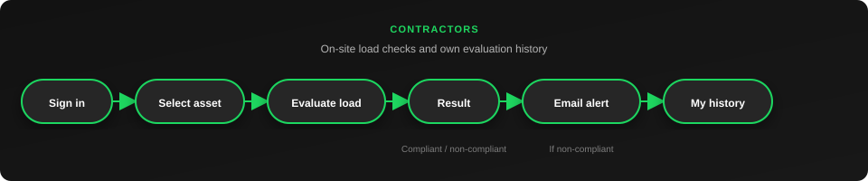
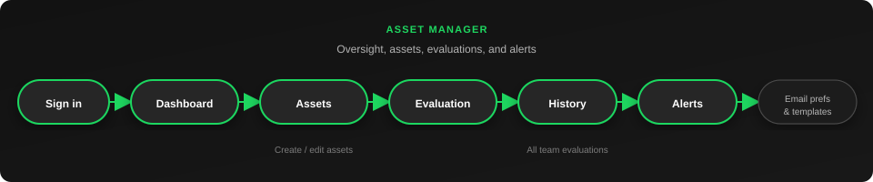
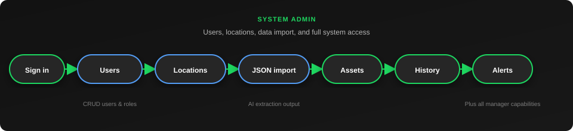

Client problem
- Design limits scattered in PDFs — hard to use on site
- Manual load checks are slow and error-prone
- No central record of outcomes and alerts
Decision-support for engineering load compliance — from drawings to on-site checks.
Client: GJP Engineering
UWA CITS5206 · Group 11
A decision-support platform for GJP Engineering — compare on-site equipment loads against design limits with a clear audit trail.
Decision-support only — not a replacement for engineering judgement.
Hover a role to view its workflow in the application.



Walkthrough recording for the demo and user manual.
Video not uploaded yet.
Place file at finalDemo/video/demo.mp4
See video/README.md for recording outline.
Monorepo: React UI, Flask API, SQLite, separate AI extraction app.

UI → API → DB · PDF → extraction tool → JSON import
| Component | Tech | Port |
|---|---|---|
| assetguard-ui | React, Vite | 5173 |
| AssetGuard-AI | Flask | 5000 |
| extraction-tool | Flask, GCP, Gemini | 5001 |
Client check-ins, Git workflow, and documented tests throughout the project.
tests/test_api_flow.pytesting/finalDemo/End-to-end artefacts for GJP: runnable software, documentation, and demo materials.
start-dev.bat / start-dev.shhttp://127.0.0.1:5000/api/v1Planned improvements beyond this semester delivery.
Thank you
Questions and live demo welcome.
GJP Engineering · UWA CITS5206 Group 11